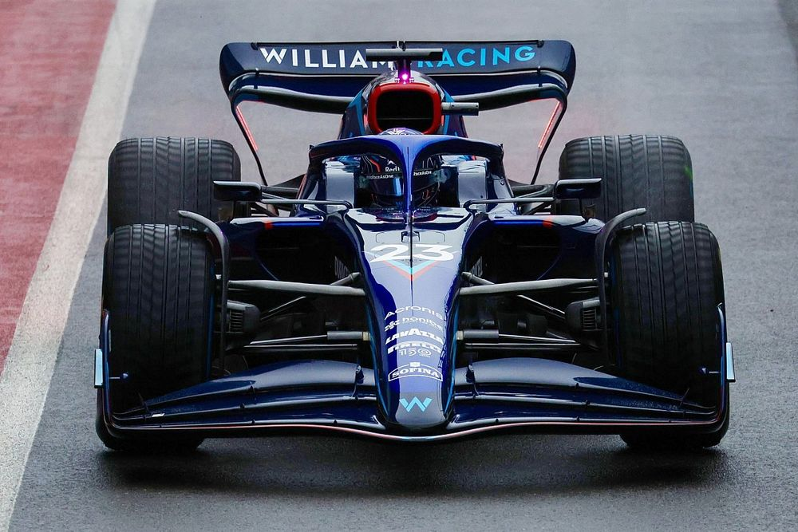

La Williams F1 è una scuderia britannica di Formula 1 con sede a Grove, fondata nel 1977 da Sir Frank Williams e da Sir Patrick Head. Dal 2020 viene iscritta al campionato mondiale di Formula 1 con il nome di Williams Racing. Quarta scuderia nella storia per numero di successi, vanta un totale di sedici titoli mondiali, nove costruttori e sette piloti. Il 21 agosto 2020 viene venduta ufficialmente al fondo di investimento statunitense Dorilton Capital.
Monoposto 2022
a Williams FW44 è una monoposto di Formula 1 realizzata dalla Williams, per gareggiare nel campionato mondiale di Formula 1 2022. La vettura è stata presentata il 15 febbraio 2022. La livrea della FW44 adotta uno schema completamente diverso rispetto all'antecedente FW43B.[5] Il colore predominante è il blu, del quale si alternano tonalità più scure e altre più chiare, le quali ricoprono grossomodo un'area simile. Il blu più scuro lo si trova sulle fiancate, sull'halo, sull'airscope, sulla zona del muso vicina all'abitacolo, sulle ali anteriore e posteriore e sulla pinna. La tonalità più chiara, invece, ricopre gran parte del cofano motore — laddove è presente uno schema decorativo a losanghe composto da diverse gradazioni di azzurro — e sull'estremità del muso. Sulla vettura sono presenti anche alcuni dettagli celesti, come tra il cofano e la pinna, le strisce ai lati del muso o la parte interna delle paratie dell'ala posteriore, rossi, come sulla pinna, sulle pance, sull'ala posteriore o come la zona circostante l'apertura dell'airscope, e infine rosso-celesti, come la fascia sul main plane dell'ala anteriore, la "V" sul muso a dividere i due toni di blu e la fascia sulla fiancata dietro le ruote posteriori.